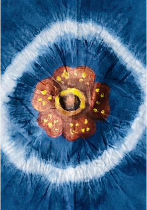
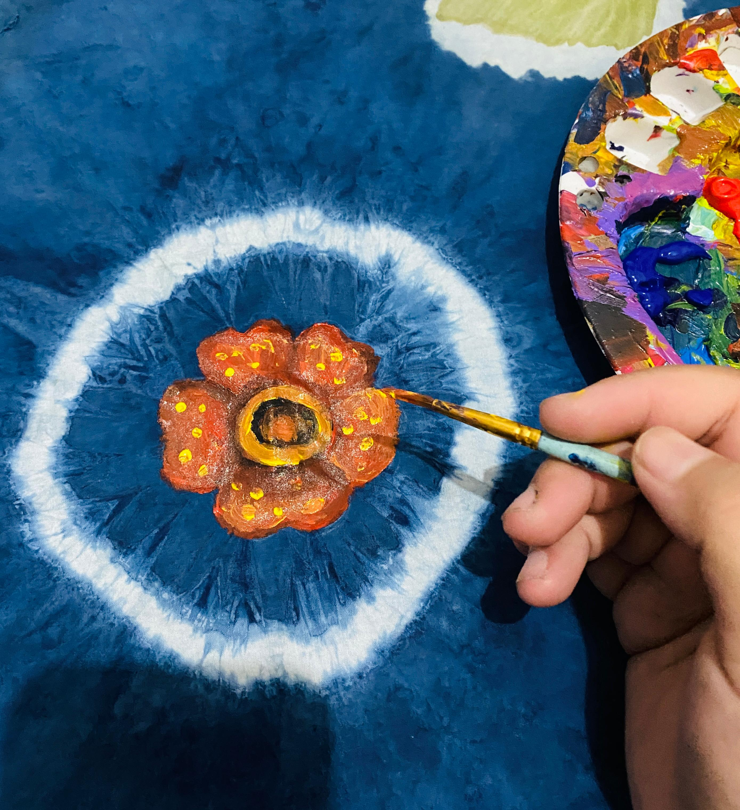
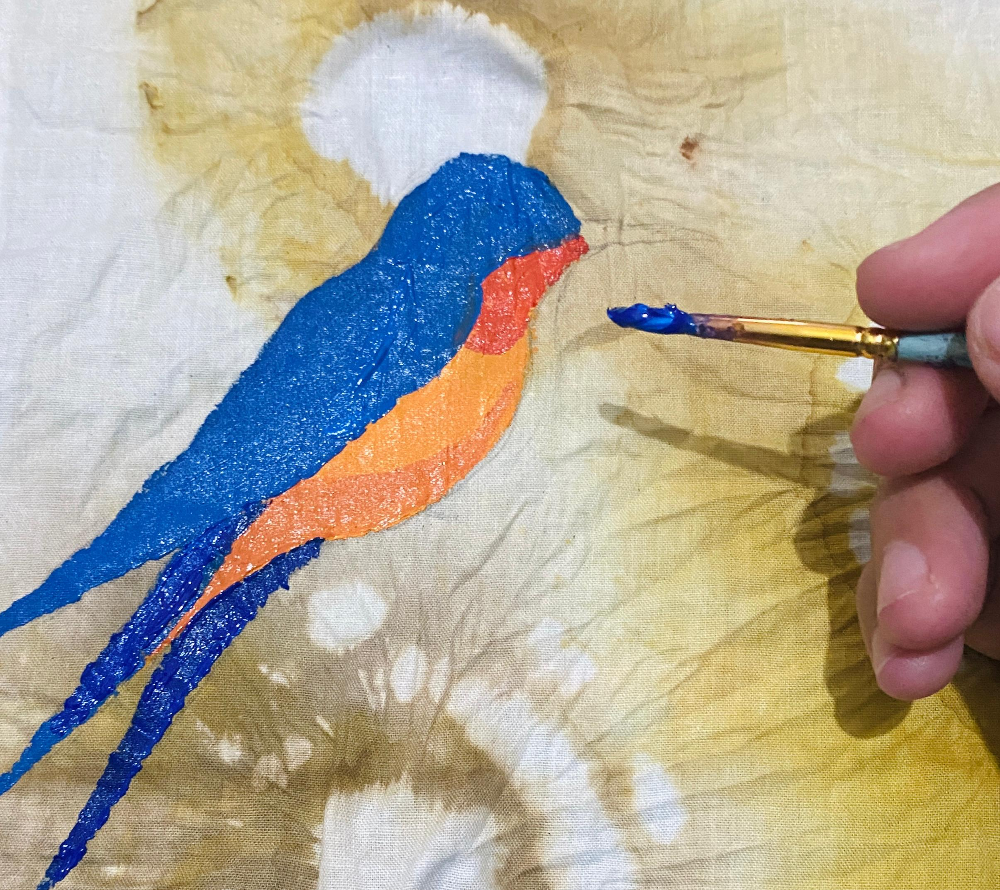
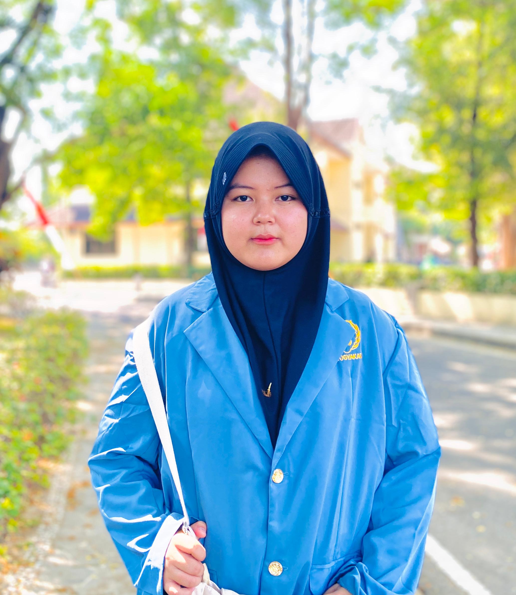
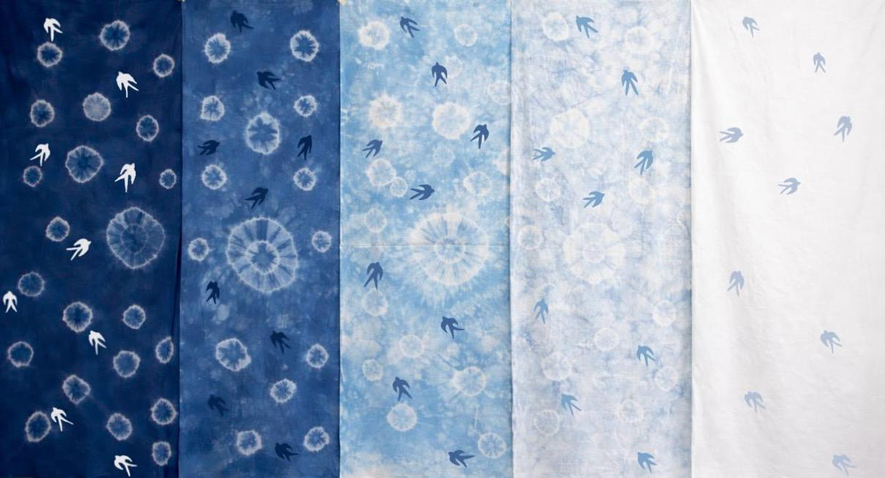
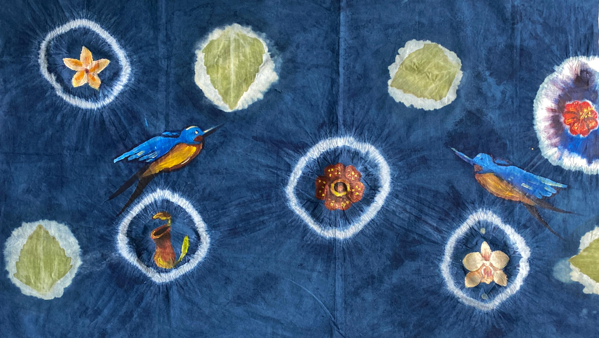
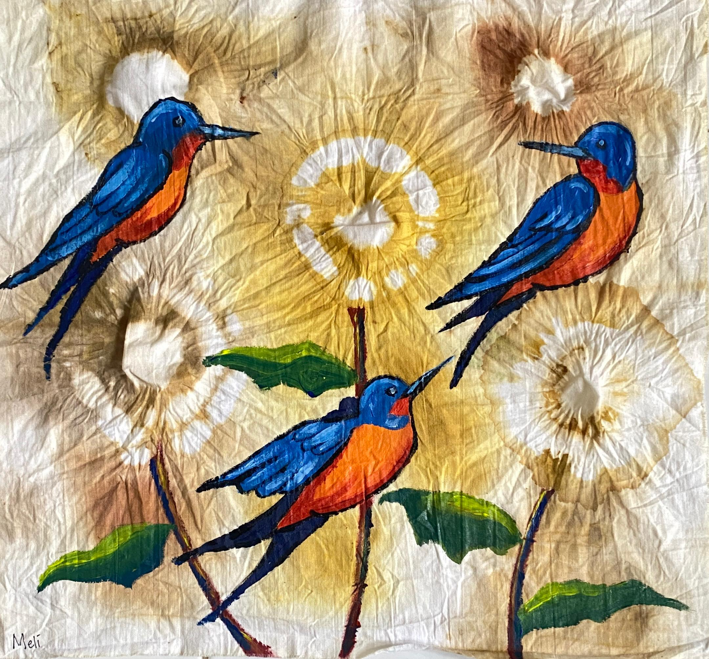

Hello, Im Melinda painting with fabric, color, and everyday light.
A playful, casual showcase of textile mixed painting and pattern-led artworks.
Artist Statement
Minat saya terhadap tekstil berawal dari kedekatannya dengan kehidupan sehari-hari, khususnya melalui pakaian dan berbagai material tekstil yang terus saya gunakan. Kehadiran yang berulang ini membuat saya memandang tekstil bukan sekadar sebagai objek fungsional, melainkan sebagai bagian dari pengalaman visual yang terbentuk dalam keseharian. Saya kemudian menghadirkan tekstil ke dalam konteks seni lukis untuk mengeksplorasi bagaimana material ini dapat dipahami sebagai bagian dari bahasa lukisan.
Pendekatan ini berkembang melalui pengalaman saya dalam mata kuliah Alternative Textile, yang membuka perspektif baru terhadap medium. Dalam praktik saya, saya menggabungkan pendekatan melukis dengan tekstil melalui teknik textile mixed painting, dengan mengeksplorasi teknik resist seperti tie-dye atau jumputan, di mana pola dan tekstur terbentuk melalui proses pengikatan dan kemudian diproses menggunakan pewarna alami yang berasal dari indigofera. Pola yang dihasilkan tidak saya anggap sebagai hasil akhir, melainkan sebagai dasar yang kemudian saya respons lebih lanjut melalui intervensi lukisan manual pada permukaan tekstil.
Proses ini menghasilkan bentuk-bentuk yang tidak sepenuhnya dapat saya kendalikan, di mana pola tekstil dan elemen lukisan saling berinteraksi serta menyatu dalam sebuah komposisi visual yang utuh.
Melalui eksplorasi ini, saya memandang lukisan tidak hanya sebagai sesuatu yang dilihat, tetapi juga sebagai objek yang dapat digunakan, disentuh, dan berinteraksi dengan ruang serta kehidupan sehari-hari. Perspektif ini muncul dari pengamatan saya terhadap bagaimana lukisan sering kali terbatas pada kanvas sebagai objek visual semata, sehingga membatasi potensi interaksinya dengan kehidupan sehari-hari. Dengan menempatkan tekstil dalam kerangka seni lukis, praktik saya membuka kemungkinan alternatif dalam memahami lukisan sebagai bentuk yang lebih fleksibel, tidak sepenuhnya terikat pada format konvensionalnya, termasuk kemungkinan untuk dikenakan tanpa kehilangan pijakannya dalam seni rupa murni.

=======Artist Statement
Minat saya terhadap tekstil berangkat dari kedekatannya dengan kehidupan sehari-hari—melalui pakaian dan material yang terus saya gunakan. Dari situ, saya melihat tekstil bukan hanya sebagai objek fungsional, tetapi juga sebagai pengalaman visual yang hidup. Saya kemudian membawanya ke dalam praktik seni lukis untuk mengeksplorasi tekstil sebagai bagian dari bahasa visual lukisan.
Melalui pendekatan textile mixed painting, saya menggabungkan teknik resist seperti tie-dye (jumputan) dengan pewarna alami indigofera. Pola yang terbentuk menjadi dasar yang saya respons kembali melalui intervensi lukisan manual, menghasilkan komposisi yang terbuka terhadap ketidakterdugaan.
Praktik ini memandang lukisan tidak hanya untuk dilihat, tetapi juga untuk digunakan, disentuh, dan hadir dalam kehidupan sehari-hari. Dengan menghadirkan tekstil, saya mengeksplorasi kemungkinan lukisan yang lebih fleksibel—melampaui kanvas konvensional, bahkan hingga dapat dikenakan tanpa kehilangan konteks seni rupa murni.


About the Artist
A relaxed introduction to the artist behind the textures and color.
Melinda Dwi Kharisma
Mahasiswa Seni Rupa, jurusan Lukis, Institut Seni Indonesia Yogyakarta (ISI Yogyakarta), angkatan 2023.
Melinda memulai praktiknya dengan lukisan minyak dan akrilik, kemudian memperluas karya menjadi textile mixed painting yang memadukan material, warna, dan motif sehari-hari.
Karyanya mengeksplorasi bagaimana lukisan dapat bersifat visual sekaligus taktil, menciptakan karya yang terasa hidup di ruang dan dalam kehidupan sehari-hari.

Exhibitions, Activities & Experience
<<<<<<< HEADA concise overview of key exhibitions, art activities, and professional experience from the MSR portfolio.
=======A concise overview of key exhibitions, art activities, and professional experience.
>>>>>>> 01552c4 (final)Pameran
- The Little Things: Stamp Reimagined Fajar Sidik Gallery (2025)
- Who Am I: Journey of Becoming Jogja Gallery
- DCG #19 Yogyakarta Cultural Park
Exhibitions
2026
- Kolaborasi, Experimental Art
di Fine Arts Building, ISI Yogyakarta
2025
- The Little Things: Stamp Reimagined
di Fajar Sidik Gallery - Who Am I: Journey of Becoming
di Jogja Gallery - DCG #19
di Yogyakarta Cultural Park
2024
- Gelitik Kecil #4
di Coffee Macan Gallery - Manuntung Fest
di Yogyakarta Cultural Park - Wetan Prahu
di Regional Development Planning Agency of Kebumen Regency - Persembahan
di Monumen Kembalinya Yogyakarta (Monjali), Yogyakarta
Aktivitas
- Internship at Pendhapa Art Space Yogyakarta (Program, Administration)
- Gallery sitter for In Memoriam Zaenal Arifin & Lucia Hartini Bentara Budaya Yogyakarta
- Database Division support for WHO AM I Exhibition Jogja Gallery
- Gallery sitter for Presi Prokal: Saling Sapao Jogja
Activities
2026
- Gallery Sitter, In Memoriam Zaenal Arifin & Lucia Hartini "Kisah Lemah Dadi"
di Bentara Budaya Yogyakarta
2025
- Divisi Database, pameran WHO AM I
di Jogja Gallery - Divisi Database, pameran Putar Balik
di The Ratan - Gallery Sitter, Presi Prokal: Saling Sapa
di Jogja-Kobe, RJ Katamsi Gallery - Gallery Sitter, The Little Things: Stamp Reimagined
di Fajar Sidik Gallery
2024
- Ketua Pelaksana, pameran Deformative Painting
di ISI Yogyakarta
Pengalaman
Creative involvement at Monument of Yogyakarta's Return (Monjali), alongside a practice rooted in canvas-based painting, oil, and acrylic work.
=======Experience
2025
Magang, Pendhapa Art Space Yogyakarta
(Program & Administrasi)
Gallery Preview
<<<<<<< HEADA curated gallery preview of selected works. Visit the full gallery page to explore the complete collection.
This preview is presented as a small exhibition wall larger works and more artworks are available on the dedicated gallery page.

Cahaya Pagi
=======A curated gallery preview of selected works. Click on any artwork to view detailed information.
GAUNG DALAM BIRU
>>>>>>> 01552c4 (final)Studi tekstur tentang rutinitas harian melalui permukaan tekstil berlapis.

Refleksi Kota
Karya atmosferik yang mengeksplorasi pergerakan antara kain dan cat.
=======SPECIMENS IN BLUE FIELD
Mengeksplorasi penggunaan material alami seperti daun marenggo dan pasta indigo.
>>>>>>> 01552c4 (final)
Motif Tradisional
Komposisi kontemplatif yang memadukan motif, tekstur, dan warna buatan tangan.
=======3 LAWET
Menampilkan representasi tiga burung lawet sebagai subjek visual yang berkaitan dengan simbol kehidupan.
>>>>>>> 01552c4 (final)Keep in Touch
Drop a note if you want to chat about exhibitions, collaborations, or new art ideas.
Say Hello